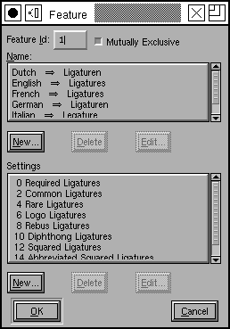
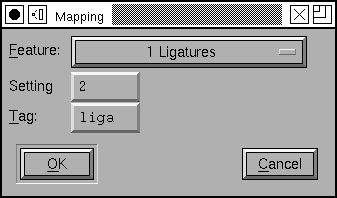

Preferences Dialog¶
Configuration Files¶
FontForge will load its preferences from multiple places, and the last definition of any preference will win. First, system defaults are loaded from your system wide $sharedir/fontforge/prefs. On a typical installation this might be /usr/local/share/fontforge/prefs or /Applications/FontForge.app/Contents/Resources/opt/local/share/fontforge/prefs on a Mac OSX installation.
After the system wide prefs file is read your personal preferences are loaded from ~/.FontForge/prefs and will always override the system defaults. Any settings you make will be saved back into ~/.FontForge/prefs.
The format of these prefs files is identical. So if you are distributing FontForge for a group of new users, you might like to configure your FontForge with settings you wish for everybody to start with and replace the default prefs file in the distribution with your own personal preferences.
The Preferences Window…¶
-
ResourceFile FontForge will read X Resources from a property on the screen. But sometimes this isn’t enough. You set this preference item to specify a file from which these resources should be read (those on the screen will also be read and will supersede those in the file).
-
HelpDir FontForge will search this directory for help files when the user presses [F1].
-
OtherSubrsFile Allows you to redefine the OtherSubrs routines used in type1 fonts. The file format is described at the scripting command
ReadOtherSubrsFile.
-
FreeTypeInFontView Normally FontForge will use the freetype library to generate glyphs for display in the fontview. This is a bit slower, but creates better images than using FontForge’s built-in rasterizer. This preference item allows you to control whether to use freetype or FontForge’s own rasterizer.
-
FreeTypeAAFillInOutlineView In the outline glyph view, FontForge can generate glyph filles using many techniques. If FontForge is using the freetype library for this, you can enable this option to have FontForge generate fills with anti aliased edges. The old default was not to antialias in order to save some RAM.
-
SplashScreen Controls whether a splash screen is displayed on start up.
-
UseCairoDrawing FontForge can use its own drawing routines, or rely on Cairo library in the outline glyph view. Using Cairo is slower, but gives smooth curves, and subpixel display precision. New setting applies only to windows created afterwards.
-
EnsureCorrectSaveExtension When inputting a name in the Save or SaveAs dialogs, FontForge can ensure that the correct filename extension (SFD or SFDIR) is always used. This prevents you from accidentally naming your source file with a binary extension (such as .otf), out of habit. Most of the time, you will want to leave this preference set to “On” because it does not get in the way and will ensure that the correct extension is given to your font files as you work on them. This makes it much harder to accidentally ship a Fontforge SFD file as as binary file or try to use an SFD format file as a binary font file.
-
NewCharset The default encoding used to create new fonts. Normally this is ISO 8859-1.
-
NewEmSize Specifies the default number of em-units in the em-square. For PostScript fonts this should be 1000, for truetype fonts it should be a power of two (often 512, 1024 or 2048 will be used).
-
NewFontsQuadratic Splines in fonts may be either in quadratic or cubic format. TrueType fonts use quadratic splines while PostScript (and OpenType) fonts use cubic splines. When FontForge generates a font it will convert from whatever format is used internally to whatever format is required for the font, so there will be no problem if this is set incorrectly, but setting it correctly for your font means you get a clearer idea of what the outlines will look like.
-
LoadedFontsAsNew When FontForge reads in a font it will generally keep the splines in the format they used in the font (that is quadratic for truetype fonts and cubic for postscript). If you set this flag then all loaded fonts will have the same file format as that specified by NewFontsQuadratic above.
-
PreferCJKEncoding This controls the loading of truetype and opentype fonts. If a font contains both an unicode encoding subtable and a cjk subtable, then this item allows you to pick which one FontForge will choose to decode.
-
AskUserForCMap When loading an sfnt (truetype, opentype font file), ask the user which cmap encoding s/he would like to use.
-
PreserveTables A string containing a list of 4 letter table tags separated by commas. When loading an SFNT (ttf/otf) file, any table in the font with one of these tags will be preserved without interpretation. (Note: If FontForge thinks it understands the table it will parse it rather than preserving it).
-
SeekCharacter A unicode character (or a hex name for a unicode character, so either “A” or “U+0041”), fontforge will attempt to scroll the display to this character when it opens a font.
-
CompactOnOpen Whether fontforge should make a font compact when it opens one (does not apply to openning an sfd file which already knows whether it should be compact or not).
-
GlyphAutoGoto In the glyph window this controls how ff behaves when the user types a normal character. If this is On then when a normal character is typed the glyph window will shift to display that character, if Off typed characters will trigger actions associated with that character as a hotkey or be ignored. For example the default action associated with ` as a hotkey is to trigger Preview mode while that key is pressed.
-
OpenCharsInNewWindow Double clicking on a glyph in a font view can either always create a new glyph view, or reuse an already opened one.
-
ItalicConstrained Whether constrained motion in the glyph view should allow motion parallel to the italic angle as well as horizontal and vertical.
-
ArrowMoveSize The number of em-units an arrow key will move a selected point in the glyph view.
-
ArrowAccelFactor When holding down the Alt (Meta) key, the arrow keys will move faster. This preference item says how much faster.
-
DrawOpenPathsWithHighlight When drawing a foreground layer, render the outline of open paths in a specific color to highlight a potential mistake. When drawing a new path, the incremental stages will be shown in a red, and when the path is closed it will revert back to the normal color. By default this open path highlight color is a red, it can be changed using the OpenPathColor resource. To do this see the Outline View 2 section of the X Resource Editor available through the File menu.
-
SnapDistance The maximum distance at which pointer motion in the glyph view will be snapped to an interesting object (ie. a point, baseline, width line, etc.). This is measured in pixels.
-
SnapToInt When positioning points and control points, the mouse will move to the nearest integral value. This is useful in editing TrueType (or PostScript if you wish to save space in the font file).
-
JoinSnap The maximum distance between the endpoints of two splines before they will join with the command. This is measured in pixels in the char view and em-units elsewhere.
-
StopAtJoin When dragging points in the outline view, if the end point of one open contour is moved onto the end point of another open contour then those two contours will join. If you leave this Off then further motion will continue to move the points, if you set this to On then FontForge will stop noticing mouse movements (it pretends that you released the mouse button). This is useful if you hand jitters a little on the mouse.
-
CopyMetaData Controls the behavior of from the fontview. Normally Copy does not copy a glyph’s metadata (name, encoding, etc.) but if this is set then it will.
-
UndoDepth Controls the maximum number of Undoes that may be retained in a glyph. (In some rare occasions an Undo will be stored even if this depth is 0)
-
UpdateFlex Figure out what points will be part of flex hints after every change to a glyph. Points which are at the center of a flex hint will have a green halo drawn around them. The criteria for flex hints are given on pages 72-73 of Adobe’s T1_Spec.pdf. This setting can be used to show you when those criteria are not met.
-
AutoKernDialog Controls whether FontForge opens an auto kern dialog for each new kerning subtable.
-
AutoWidthSync Whether you want the widths of accented glyphs to track the width of the base glyph (so if you modify the width of A then the width of À will automagically change, if À is built as a reference to A and a reference to grave)
-
AutoLBearingSync Whether you want left side bearings of accented glyphs to track the left side bearing of base glyphs (so if you shift A left, then the accent in À will also be shifted left)
-
Clear Instructions on Big Changes TrueType instructions refer to points by number. So if you do any editing that adds, removes or otherwise changes the point numbers then the instructions will be applied to a different set of points.
Sometimes the results are amusing, but almost always they are ugly and wrong.
This is very different from having out of date PostScript Hints. There the hints are probably just useless (as opposed to being actively bad, as here).
FontForge will normally delete all instructions to prevent this happening. However, if you are prepared to fix up the instructions after a set of changes you may prefer to have the instructions left. Be careful though!
-
CopyTTFInstrs When copying and pasting in the font view, copy and paste instructions as well as the glyph outlines.
Warning
If you copy a glyph from one font to another its instructions will probably not work (it will make assumptions about the control table and subroutines which do not hold in the new font).
-
AccentOffsetPercent The amount of space (as a percentage of the em-square) that should be placed between an accent and the glyph below it by the Build Accented Character command.
-
AccentCenterLowest Whether accents should be positioned over letters based on the center of the accent, or on the center of the bottom of the accent.
-
CharCenterHighest Whether accents should be positioned over letters based on the center of of the letter, or on the center of the top of the letter.
-
PreferSpacingAccents Whether to prefer spacing accents (Unicode 02C0-02FF) or combining accents (0300-036F) when building accented glyphs.
-
PreferPotrace If you system has both potrace and autotrace installed this allows you to specify which you’d prefer FontForge to use for autotracing.
-
AutotraceArgs This allows you to specify any arguments you want passed to the autotrace program. Don’t try to pass something that will change the input or output format or set input or output files.
-
AutotraceAsk If this is set then each time autotrace is invoked it will ask you for arguments.
-
MfArgs This is the command passed to the mf (MetaFont) program which controls conversion of .mf files into bitmaps.
-
MfClearBg Loading a .mf font is a multi step process, first a bitmap font is generated, it is loaded into the background, then autotrace is invoked to trace around the backgrounds. These background bitmaps can take up a lot of space and you may not want them after they have been autotraced. Selecting this entry will remove those bitmaps from the font after they have been used.
-
MfShowErr The mf program generates a fair amount of verbiage even when it is working correctly. And if it is working correctly you don’t want to see those words. So normally FontForge suppresses messages from mf. But if something goes wrong you do want to see mf’s output and setting this will allow you to do so.
-
Foundry Name Used in generating bdf files (part of the X Windows font naming convention).
-
TTF Foundry Similar to the above except that it is used inside ttf files (the achVendID field of the OS/2 table) and is limited to 4 characters.
-
NewFontNameList Specifies the namelist that will be attached to any new font. This list will be used to name any glyphs created in that font. See the section on namelists for more information.
-
RecognizePUANames Originally Adobe used the PUA (public use area of unicode) to contain glyphs for small caps, lower case numerals, etc. They have since changed their minds and no longer recommend this usage. FontForge normally recognizes names like “a.sc” as being mapped to the appropriate slot in Adobe’s old view of the PUA. If you don’t like this behavior turn this item off and “a.sc” will not have a unicode encoding.
-
UnicodeGlyphNames Glyph names are supposed to be composed of ASCII letters and numbers (and a few other characters). At least they are when they are stored in a font. But when you are building a font and if you are not an English speaker, it might be useful to have a wider range of letters available for glyph names. You should never export these names when you generate a font (Use the Force Glyph Names to field of the generate dialog).
-
AddCharToNameList Some character names are barely understandable or unintuitive. While editing opentype lookups having long lists of such names, confusion is easy. A character itself may be appended to the name to make things easier.
-
AskBDFResolution Normally FontForge will guess at what screen resolution you intend based on the pixel size of the font (ie. 17 pixel fonts are usually 100dpi (12pt) and 12 pixel fonts are usually 75dpi), but sometimes you will have more esoteric desires. Setting this will give you more control, but you have to click through another dlg.
-
AutoHint Whether glyphs should be automagically hinted before a font is generated or rasterized.
-
StandardSlopeError The maximum slope difference that still allows two elements to be considered as parallel. Enlarging this value makes autohinter more tolerable to small deviations from straight lines when detecting stem hints.
-
SerifSlopeError Serifs and other small features usually have to be allowed to deviate from parallellness more than stem edges.
I am testing a few hinting options there are three radio button sets which add the following hints:
HintBoundingBoxes
Add hints around the bounding boxes of some glyphs. Adobe seems to do this.
HintDiagonalInter
Add hints at the intersections of diagonal stems
HintDiagonalEnds
More importantly there is also the DetectDiagonalStems option. Make sure this is turned on if you intend to have FontForge generate truetype instructions automatically.
Truetype autoinstructor bases its output on postscript hints, but it has also its own options:
-
InstructDiagonalStems Generate instructions for diagonal stem hints. For this option to be useful, DetectDiagonalStems must be enabled first. Enabling this will lessen apparent weight inconsistencies, perceived at some sizes whenever horizontal and vertical stems are controlled, but diagonals are not.
-
InstructSerifs Try to detect serifs and other elements protruding from base stems and generate instructions for them: try to control distances between serifs’ tips and their base stems.
-
InstructBallTerminals Generate instructions for ball terminals. They need different handling than other kinds of serifs.
-
InterpolateStrongPoints Instructing stems is sometimes not enough. This option makes FontForge to interpolate some important points (sharp corners, inflections, curve extremes), not affected by other instructions, between stem edges. Both parallel and perpendicular extremes are controlled. Agressive optimization is employed, to still leave as many points as possible to IUP, but manual review is nevertheless greatly adviced.
-
CounterControl Make sure similar or equal counters remain the same in gridfitted outlines. This was inspired by, but works somewhat independently from, PS Counter Hints. Enabling this option means that proper shapes are more important than proper scaling of advance widths.
-
UseNewIndicScripts MS has changed the way it handles indic scripts and has created a parallel set of script tags for the new method. Set this flag if you want to create a font using the new Indic system.
This section of the dialog allows you to define built in scripts that will show up in the script menu. Each entry has two things associated with it, the menu name and a script file. The menu name will be the name of this entry inside the script menu, and the script file will be the filename of the file to be invoked. The “…” button allows you to browse for script files, which I think have extension .pe (but which can have whatever extension you prefer if you don’t like my conventions).
The Mac Features dialog allows you to define a set of default names (in many languages) for mac features and settings. These names are placed in the ‘name’ table whenever a feature/setting is used in a generated ‘morx’ table. (Thus if you have some common ligatures in your font, then the “ligature” feature names, and the “common ligature” setting names will be added to the ‘name’ table).
You may also use this dialog to establish which setting(s) should be on by default in a given feature and whether the feature only allows one setting to be on at a time (the settings are mutually exclusive). All of this data may be overridden by the similar dialog in the Element->Font Info dialog.
To edit an existing feature double click on that feature in the list (at right) this will bring up the dialog on the left. Each feature must be assigned a unique number. You should indicate whether it has mutually exclusive features or not. You should provide names for the feature in various languages, and you should provide settings for the feature.
To add a new name press the [New] button under the name list and you will be prompted for a language and a name.
To add a new setting press the [New] button under the setting list. The setting dialog contains the numeric value of this setting (Apple has decreed that if the feature is not mutually exclusive, all settings must be even numbers), whether this setting is on by default, and then a list of names for the setting in as many languages as you like.
The Mac Mapping dialog allows you to define a mapping between OTF GSUB
feature tags and Apple’s
mort/morx
Feature/Setting codes.
Apple’s published list of features and settings appears out of date (in that some features used by current fonts are not found in it).
A four letter OTF feature tag may correspond to a mac feature/setting combination. If you wish to create a new mapping you must first insure that the mac feature setting you desire is present in the feature list (above), and then you may add the mappings.
You must specify a mac feature (which must already be defined), a mac setting code and a 4 character opentype tag.
Other ways of configuring¶
A number of things that might be controlled from a preference window are controlled by